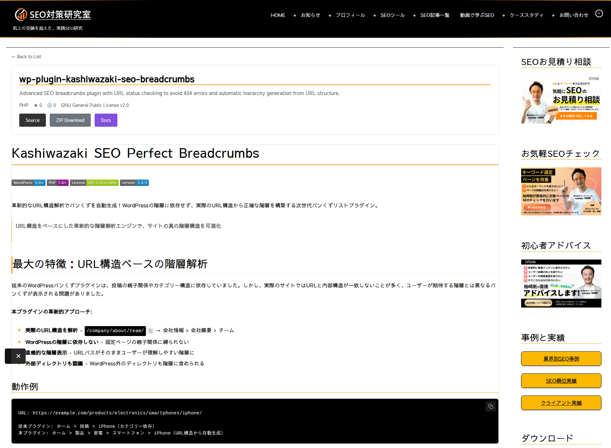

詳細ページ機能
リポジトリごとに固有のパーマリンクを持つ詳細ページを自動生成し、README.mdをHTMLレンダリング、GitHub Pagesへのリンクも自動追加します。

図: wp-plugin-kashiwazaki-seo-breadcrumbs の詳細ページ。ヘッダーの Source / ZIP Download / Docs ボタンの下に README.md のレンダリング結果が続きます
URLの仕組み
詳細ページのURLは /{ベースパス}/{リポジトリ名}/ 形式で生成されます。
ベースパスは管理画面「基本設定」→「詳細ページのベースパス」で変更可能です。デフォルトは software。tools/plugins のように多階層も指定できます。
| ベースパス | リポジトリ名 | 生成されるURL |
|---|---|---|
| software | wp-plugin-my-tool | /software/wp-plugin-my-tool/ |
| tools | my-utility | /tools/my-utility/ |
| dev/projects | awesome-lib | /dev/projects/awesome-lib/ |
ベースパスを変更した場合、または追跡対象リポジトリが増えた場合は、WordPress 管理画面「設定 → パーマリンク」で「変更を保存」をクリックしてリライトルールをフラッシュしてください。これを忘れると詳細ページが 404 になります。
表示内容
ヘッダー情報
リポジトリ名・説明・メタ情報（言語・スター数・フォーク数・ライセンス）を上部に表示します。
アクションボタン
Source（GitHub）・ZIP Download（最新リリース or ブランチ）・Docs（GitHub Pages、有効時のみ）の3種類のボタンを自動生成します。
README レンダリング
README.md を Parsedown or GitHub Markdown API でHTML化し、画像・リンクの相対URLは GitHub の生データに自動解決します。
Markdown レンダリング
README.md のレンダリングには以下の優先順位でパーサーが選択されます。
Parsedown クラスが存在すれば使用（セーフモード）
GitHub API の /markdown エンドポイントにPOST
ベーシックな正規表現ベースのフォールバック
サーバーに Parsedown ライブラリ（composer require erusev/parsedown）をインストールしておくと、GitHub APIを消費せずに高速にMarkdownをレンダリングできます。未インストールの場合はGitHub APIが使われますが、レート制限の対象になります。
画像・リンクの相対パス
README.md内の相対パスは自動的にGitHubの正しいURLに変換されます。
| 要素 | 元の相対パス | 変換後のURL |
|---|---|---|
| 画像 | ./docs/screenshot.png |
https://raw.githubusercontent.com/{owner}/{repo}/HEAD/docs/screenshot.png |
| リンク | ./CHANGELOG.md |
https://github.com/{owner}/{repo}/blob/HEAD/CHANGELOG.md |
GitHub Pages 自動検出
GitHub API の has_pages フラグが true のリポジトリには、カード表示と詳細ページの両方に「Docs」ボタンが自動追加されます。
| リポジトリの状態 | 生成されるURL |
|---|---|
| 通常のプロジェクト Pages | https://{owner}.github.io/{repo}/ |
リポジトリ名が {owner}.github.io のユーザーサイト |
https://{owner}.github.io/ |
| has_pages=false | ボタン非表示 |
ボタンのラベル（デフォルト: Docs）は管理画面「基本設定」→「ボタンラベル」で変更できます。プロジェクトによって Demo や Site などに変更しても構いません。